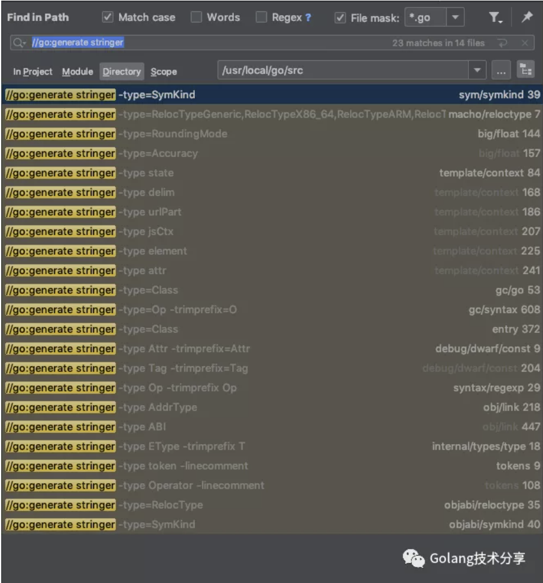
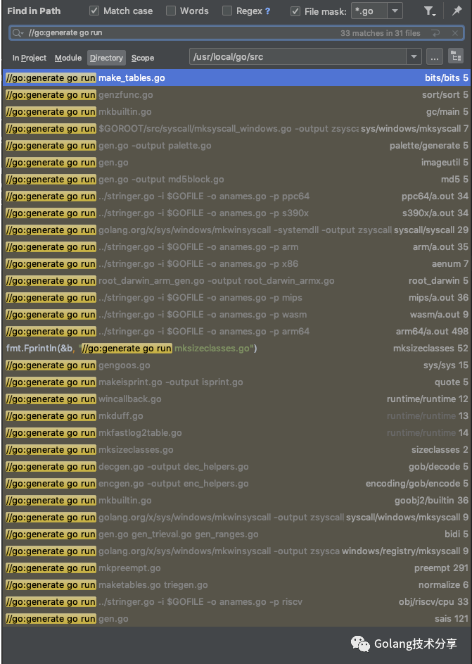

Go语言提供了一系列强大的工具，灵活使用这些工具，能够让我们的项目开发更加容易，工具集包含如下。
1 | bug start a bug report |
工具的源码位于$GOPATH/src/cmd/internal，本篇文章主要讨论Go工具generate。
Go语言的自动化工具
go generate常用于自动生成代码，它可以在代码编译之前根据源代码生成代码。当运行go generate时，它将扫描与当前包相关的源代码文件，找出所有包含”// go:generate”的注释语句，提取并执行该注释后的命令，命令为可执行程序。该过程类似于调用执行shell脚本。
使用方法
- 添加特殊注释
1 | //go:generate command argument... |
- 执行generate命令
1 | $ go generate [-run regexp] [-n] [-v] [-x] [build flags] [file.go... | packages] |
注意事项
- 该特殊注释必须包含在.go源码文件中。
- 每个源码文件可以包含多个generate特殊注释。
- go generate不会被类似go build，go get，go test等命令触发执行，必须由开发者显式使用。
- 命令执行是串行的，如果出错，后续命令不再执行。
- 特殊注释必须以“//go:generate”开头，双斜线之后没有空格。
- 执行命令必须是系统PATH（echo $PATH）下的可执行程序。
使用示例
1 | package main |
执行go generate命令
1 | $ go generate |

为枚举常量实现String方法
看完上述generate的简单介绍，可能读者并没有感受到该工具的强大之处，小菜刀提供一个该工具的经典应用场景：为枚举常量实现String方法。
这里需要提及官方的另外一个工具stringer，它可以自动为整数常量集编写String()方法。由于stringer并不在Go官方发行版的工具集里，我们需要自行安装，执行如下命令。
1 | go get golang.org/x/tools/cmd/stringer |
这里引用stringer文档中的一个示例。代码如下，其定义了一组不同Pill类型的整数常量。
1 | package painkiller |
为了进行调试或者其他原因，我们希望这些常量能够打印出来，这意味着Pill要有一个带有签名的方法。
1 | func (p Pill) String() string |
要实现它，非常简单。
1 | func (p Pill) String() string { |
试想，如果我们的Pill名单里新增了一批药品名，每次增加或修改药品名，在相应的签名函数里，也都需要进行更改。这样岂不是很麻烦且很可能遗漏或出错？这时，我们可以通过 go generate + stringer的方案解决该问题。很简单，只需在定义Pill的代码中，增加一句注释语句即可。
1 | //go:generate stringer -type=Pill |
上面的命令，代表运行stringer工具来为Pill类型生成String方法，默认输出到pill_string.go文件中，执行如下。
1 | $ go generate |
这样，每次我们对Pill类型有修改时，我们所需要做的就是运行以下语句即可。
1 | $ go generate |
当然，你要是觉得这样麻烦，或者担心忘记执行generate语句。那么，可以将go generate语句写入Makefile之中，置于go build命令之前，实现代码生成与编译的自动化。
值得一提的是，在Go源码文档中，大量采用了go generate+stringer的方案实现对枚举常量的String方法。在小菜刀本机Go 1.14.1的源码下，一共有23处使用，具体如下。

总结
本文主要介绍generate是什么，能做什么，如果想深入理解其内在实现逻辑，可以去看Go源码中生成代码的详细过程，例如sort包下通过genzfunc.go实现zfuncversion.go的生成。在Go源码宝库中，可以找到很多相似的实现逻辑，参照如下。

它们利用Go编译器提供的库，包括定义抽象语法树的 go/ast、解析抽象语法树的go/parser、解析用于格式化代码的 go/format、用于Go词法标记的go/token等。解析源文件并按照已有的模板生成新的代码，这一过程和Web 服务中利用模板生成 HTML 文件类似。
总结：减少代码的重复编写，保护头发！！
参考
https://blog.golang.org/generate
https://godoc.org/golang.org/x/tools/cmd/stringer
https://docs.google.com/document/d/1V03LUfjSADDooDMhe-_K59EgpTEm3V8uvQRuNMAEnjg/edit#